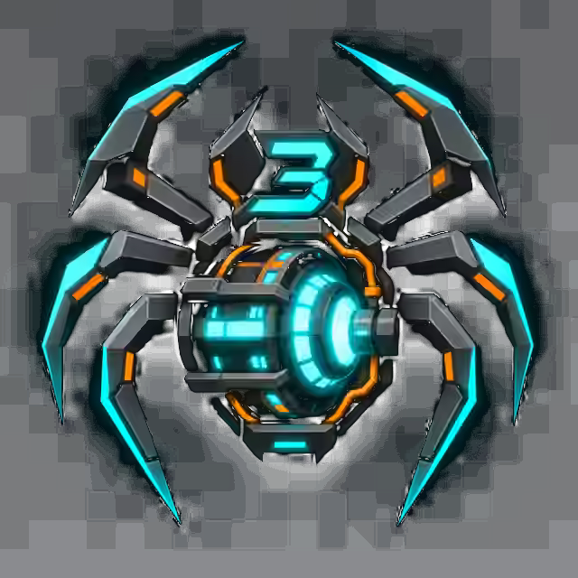

The early roots
Spider Paint started as an experiment in hands-on 3D creation. The guiding idea survived: treat geometry as something you can touch and explore.
CHATGPT × MCP × 3DRAFT
A real 3D workshop inside a ChatGPT conversation. Ask an AI agent to build, inspect and reshape geometry — then explore the result using the original spi3der editor, not a substitute interface.
MCP APP · BROWSER-NATIVE · OPEN SOURCE

spi3der · 3Draft engine · MCP App workshopWHERE WE STARTED
spi3der did not begin as a ChatGPT widget. It grew out of years of small, independent tools for constructing, rendering and exploring interactive worlds.
Spider Paint started as an experiment in hands-on 3D creation. The guiding idea survived: treat geometry as something you can touch and explore.
A compact rendering and geometry engine emerged, with JSON scenes, precise surface operations and WebGL2/SVG tools. It remains separate from application UI.
The 2026 VR sprint brought starfields, spacecraft, scene navigation and hand-based spatial interaction into the same experimental universe.
MCP exposed real modelling operations: meshes, transforms, placement, geometry queries and renders. AI could produce a scene rather than merely describe one.
In November 2026, spi3der appeared directly in a ChatGPT conversation with its own editor UI. A mechanical eight-legged logo spider became an end-to-end modelling demonstration.
The aim is not to keep one immortal widget on screen. Each useful result can be a scene checkpoint; the next instruction should be able to continue from that state.
WHAT WORKS TODAY
The MCP service interprets modelling requests and hands executable geometry steps to the browser. The embedded view is spi3der's real editor, with its existing panels and input mapping. Geometry and rendering happen in the browser.
01 / CHATGPTAsk for a shape, machine, scene, or change in everyday language.
02 / MCPTools such as add_mesh, add_box, transform and inspect encode the work as geometry operations.
03 / 3DRAFTA browser-side scene is created using the 3Draft geometry engine and JSON scene representation.
04 / SPI3DERInspect, orbit and edit inside the native spi3der interface — no invented mini-editor.
A CHAT PROMPT
> Open the spi3der workshop.
> Model an eight-legged mechanical spider.
> Put it on a worktable.
This demonstration generated editable 3D objects and opened the resulting scene inside ChatGPT. Tool completion, successful iframe rendering and durable scene synchronization are different milestones — we verify them separately.
USAGE DOCUMENTATION
This is a practical guide for the current ChatGPT MCP App proof of concept. The embedded app runs the familiar spi3der controls; the chat is where you issue new modelling instructions.
Use spi3der as a connected custom MCP app in ChatGPT, where custom app connections are supported. For self-hosted setup, obtain the actual Cloud Run service URL and append /mcp; do not guess a deployment URL. See the repository README for the current setup.
gcloud run services describe spi3der --region europe-west1 --format="value(status.url)" # MCP endpoint: <returned service URL>/mcp
Try: “Open the spi3der workshop and build a simple cube.” ChatGPT can call open_workshop with modelling steps. The native editor appears as an embedded ChatGPT app if the host accepts the MCP resource.
Describe proportions and parts: “Build a low-poly mechanical spider with eight articulated-looking legs, dark plates and cyan details.” The agent can use meshes, boxes, transforms and placement operations. Name parts so they remain inspectable.
Use the original spi3der View / Fly / Scene / Sys controls, pointer navigation and keyboard shortcuts. Don't expect a second ChatGPT-specific toolbar. Check the version stamp and Git commit hash to identify the actual build.
For reproducible iterations, keep or export the previous scene and use it as the next starting point. The v7 shared-session protocol defines workshop_state and workshop_edit with revision checks, but full end-to-end host synchronization and persistence still need verification.
An MCP response or trace_id confirms a server-side request, not that the whole model rendered correctly. Inspect the actual editor. In shared-session builds, an edit is done only after last_edit.status reports applied.
Read the current workshop architecture, tool descriptions and deployment notes directly in the spi3der repository. It is updated independently from this introduction.
CURRENT BOUNDARIES
The embedded native-editor demonstration is real. Some collaboration features are still an MVP, not a promise of always-on shared state.
Chat history is not a scene database. The current server-side shared sessions are process-local, limited in size, and can disappear after restart or redeployment. Export or persist a checkpoint when it matters.
A visible 3D model does not by itself prove reliable two-way editing. An “MCP Resource not found” message has appeared in a workshop test even while the native editor rendered; resource routing and scene-state acknowledgements must be verified separately.
There is no alternative miniature workshop UI. The native application owns editing, selection, pointer actions, keyboard mapping and the View / Fly / Scene / Sys panels. ChatGPT supplies modelling commands.
A ChatGPT turn triggers an agent action. The widget can poll queued edits while open, but it does not silently keep an AI working after the conversation ends. Multi-user, multi-instance and conflict-free live editing are not finished.
WHERE WE ARE GOING
The next direction is a workflow where a human and an AI can inspect the same scene, pass checkpoint states between chat turns, queue new instructions without losing a thought, and eventually collaborate across independent cameras and devices.
Scene revisions, persistence, deliberate conflict handling and XR are engineering steps toward that goal. The guiding principle remains simple: the conversation drives the work; spi3der provides the real tools.
spi3der is an evolving open-source workshop, not a finished multi-user platform.